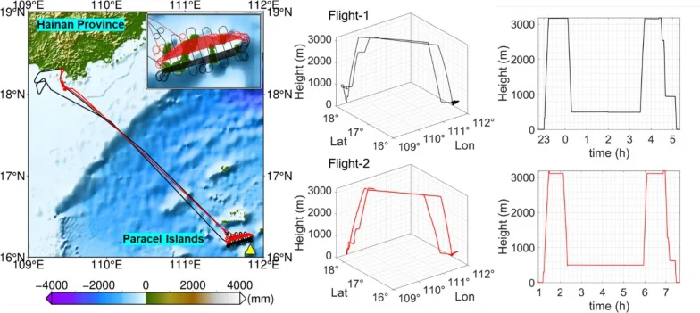

2026 · Accepted
Assessing the Impact of Dynamic Tropospheric Stochastic Constraints on Airborne GNSS Positioning and ZTD Estimation
Measurement
Evaluates dynamic tropospheric constraints in airborne GNSS experiments, examining their effects on positioning, zenith delays, and coupled estimation parameters.